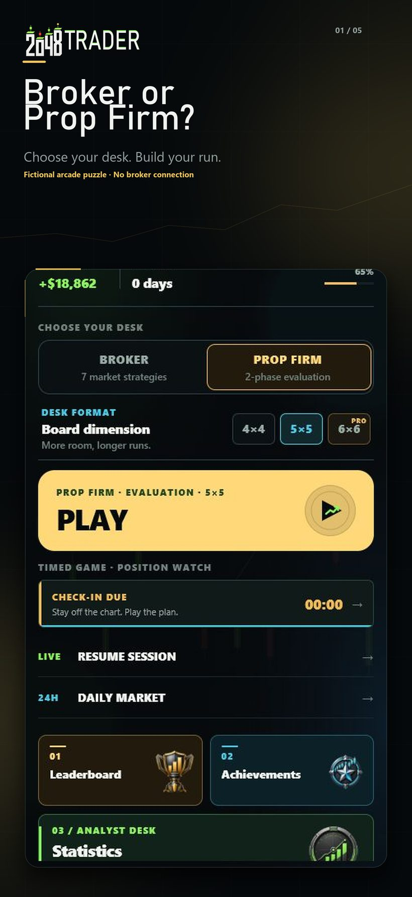
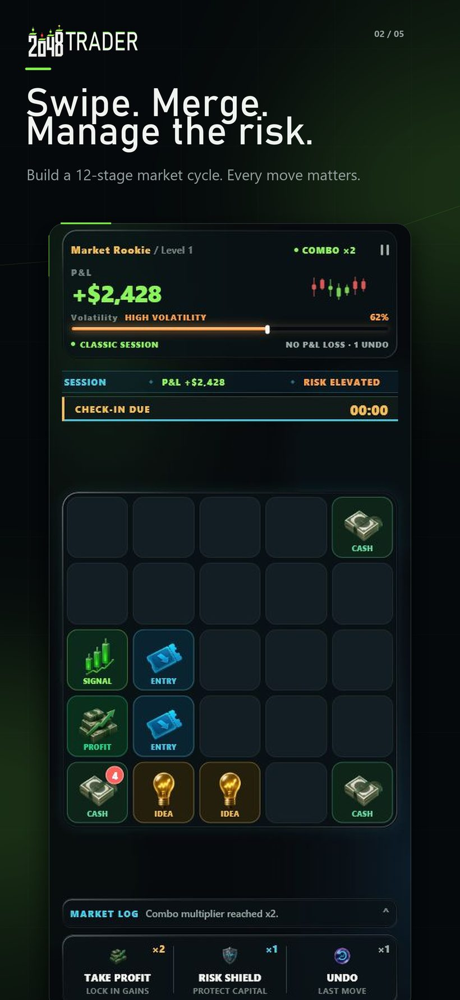
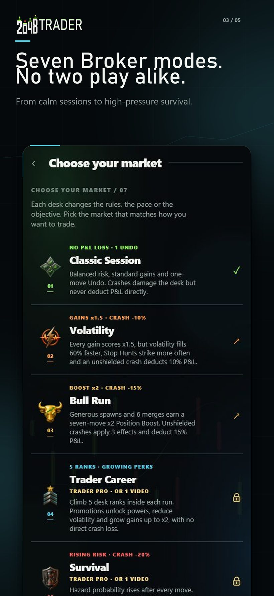
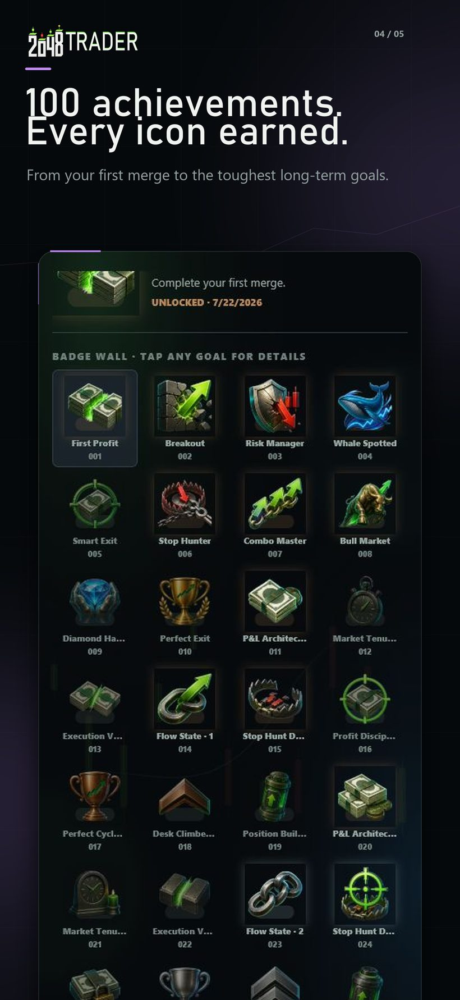
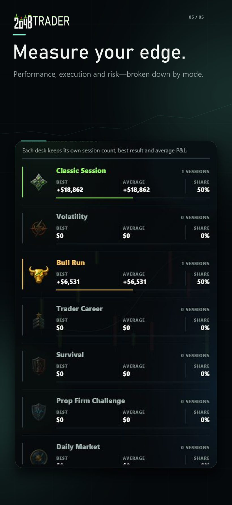
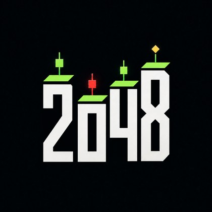

A market cycle,
played as a puzzle.
2048 Trader is a 2048-inspired puzzle for iPhone in which the tiles never show a number. Instead they show twelve illustrated stages of a fictional market cycle, from CASH to the PERFECT EXIT.
Download on the App Store →Editorial note. 2048 Trader is a fictional arcade puzzle that borrows the visual language of trading. It offers no financial advice, uses no real market data or tickers, involves no real money, and connects to no broker. It makes no claim about earnings, returns or trading skill. Please do not file it as a finance or investment app.
Fact sheet
| Title | 2048 Trader |
|---|---|
| Developer | Thierry Roulin — independent, France |
| Platform | iPhone, iOS 15.1 or later |
| Category | Games › Puzzle › Strategy |
| Price | Free. One optional in-app purchase, Trader Pro Lifetime (€8.99 / $7.99). No subscription. |
| Languages | English and French |
| Age rating | 13+ |
| Version | 1.0.2 |
| App Store | apps.apple.com/app/id6799492587 |
| Press contact | beachfinder.app@gmail.com |
Boilerplate — short
Ready to paste, 48 words.
Boilerplate — long
2048 Trader takes the familiar sliding-tile puzzle and removes the one thing everybody associates with it: the numbers. Each tile is instead a stage in a fictional market cycle — CASH, IDEA, SIGNAL, ENTRY, PROFIT, BREAKOUT, MOMENTUM, FOMO, WHALE, BULL RUN, BUBBLE and finally the PERFECT EXIT. Players read the board by icon and colour rather than by arithmetic.
Around that core sits a risk layer. Every merge heats a volatility gauge; the hotter the market, the higher the scoring multiplier and the more likely a hazard becomes. Timed Stop Hunts must be merged away before they expire, or they leave a locked Chop cell behind. At maximum volatility the market crashes — a setback the player can recover from, never an instant loss. Two consumable tools, Take Profit and Risk Shield, let the player cash a position out to cool the board or absorb the next hit.
Eight modes range from a straightforward Classic session to Survival, a fictional Prop Firm challenge with drawdown limits, a deterministic Daily Market that gives every player the same board, and seed-based Duels between friends. The game is offline-first, includes a Game Center leaderboard and 100 achievements, and offers reduced-motion and high-contrast options.
What makes it different
- No numbers on the tiles. The progression is read visually, which changes how the board is parsed compared with a standard sliding-tile puzzle.
- Risk is a mechanic, not a theme. The volatility gauge genuinely controls hazard frequency, scoring multipliers and crash events.
- Hazards are proven fair before they appear. Before a timed Stop Hunt is placed, the game runs a search over future moves and only accepts the placement if several distinct solutions exist within the timer.
- Deterministic daily board. A shared seed means every player worldwide gets an identical Daily Market, and a seed code can be passed to a friend for a duel.
Screenshots
iPhone 6.9", shown here web-optimised and free to use in coverage of the game. Full resolution originals are available on request.





Brand assets

Please keep the icon unmodified and uncropped. The name is written “2048 Trader”, with a regular space and no hyphen.
Review codes, extra assets or interview requests
beachfinder.app@gmail.comWritten by a solo developer; replies usually within 48 hours.